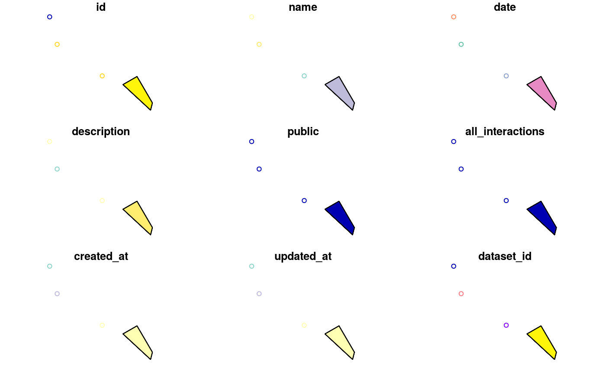

Search over all networks using a keyword, a custom query or a spatial object
search_networks(query, verbose = TRUE, ...) search_networks_sf(query_sf, verbose = TRUE, ...)
| query | either a character string including a single keyword or a list containing a custom query (see details section below), or a spatial object (see the description of |
|---|---|
| verbose | a |
| ... | further arguments to be passed to |
| query_sf | a spatial object of class |
An object of class mgSearchNetworks, which is a data.frame object with all networks informations
If query is a character string, then all fields of the database table
including character strings are searched and entries for which at least one
partial match was found are returned.
Alternatively, a named list can be used to look for an exact match in a specific field.
In this case, the name of the list should match one of the field names of the database table. For the networks table, those are:
Note that for lists with more than one element, only the first element is used, the others are ignored. An example is provided below.
search_networks_sf: Search network within a spatial object passed as an argument.
https://mangal-wg.github.io/mangal-api/#networks
search_networks(query="insect%")#>#>#>#> Simple feature collection with 14 features and 10 fields (with 3 geometries empty) #> geometry type: POINT #> dimension: XY #> bbox: xmin: -114.9667 ymin: 8.534018 xmax: 138.3833 ymax: 75 #> epsg (SRID): 4326 #> proj4string: +proj=longlat +datum=WGS84 +no_defs #> First 10 features: #> id name date #> 1 18 mosquin_martin_1967_19650731_18 1965-07-31T04:00:00.000Z #> 2 909 elberling_olesen_1999_19940823_909 1994-08-23T04:00:00.000Z #> 3 948 kato_1993_19910901_948 1991-09-01T04:00:00.000Z #> 4 1460 cornaby_1974_19680208_1460 1968-02-08T05:00:00.000Z #> 5 1461 cornaby_1974_19680229_1461 1968-02-29T05:00:00.000Z #> 6 1471 jiron_cartin_1981_19770101_1471 1977-01-01T05:00:00.000Z #> 7 1493 robinson_1953_19480101_1493 1948-01-01T05:00:00.000Z #> 8 1501 seifert_1976a_19700701_1501 1970-07-01T04:00:00.000Z #> 9 1500 seifert_1976a_19700701_1500 1970-07-01T04:00:00.000Z #> 10 1502 seifert_1979_19760201_1502 1976-02-01T05:00:00.000Z #> description #> 1 Occurence of flower-visiting insect on plant species, two miles north of Bailey Point, Melville Island, N.W.T., Canada #> 2 Flower-visiting insect at Mt. Latnjatjarro, northern Sweden #> 3 Flower and anthophilous insect interactions in the primary cool-temperate subalpine forests and meadows at Mt. Kushigata, Yamanashi Prefecture, Japan #> 4 The insect community of a toad carrion in a tropical dry lowland forest at Finac La pacifica, Guanacaste Prov., Costa Rica #> 5 The insect community of a toad carrion in a tropical wet lowland forest near Rincon de Osa, Puntarenas Prov., Costa Rica #> 6 The insect community of a dog carcass in a premontane humid forest, University of Costa Rica, Costa Rica #> 7 The insect community of an elm tree brown flux (Ulmus procera salisb), Sheffield #> 8 The insect community in Heliconia wagneriana on the Peninsula de Osa, Costa Rica #> 9 The insect community in Heliconia imbricata on the Peninsula de Osa, Costa Rica #> 10 The insect community of Heliconia bihai in a Venezuelan cloud forest #> public all_interactions created_at updated_at #> 1 TRUE FALSE 2019-02-22T18:38:37.491Z 2019-02-22T18:38:37.491Z #> 2 TRUE FALSE 2019-02-24T22:21:32.444Z 2019-02-24T22:21:32.444Z #> 3 TRUE FALSE 2019-02-25T20:52:09.499Z 2019-02-25T20:52:09.499Z #> 4 TRUE FALSE 2019-03-01T18:30:50.890Z 2019-03-01T18:30:50.890Z #> 5 TRUE FALSE 2019-03-01T18:30:57.419Z 2019-03-01T18:30:57.419Z #> 6 TRUE FALSE 2019-03-04T18:22:33.907Z 2019-03-04T18:22:33.907Z #> 7 TRUE FALSE 2019-03-06T15:58:35.734Z 2019-03-06T15:58:35.734Z #> 8 TRUE FALSE 2019-03-06T19:58:01.589Z 2019-03-06T19:58:01.589Z #> 9 TRUE FALSE 2019-03-06T19:57:58.599Z 2019-03-06T19:57:58.599Z #> 10 TRUE FALSE 2019-03-06T20:26:41.249Z 2019-03-06T20:26:41.249Z #> dataset_id user_id geom #> 1 4 3 POINT (-114.9667 75) #> 2 9 2 POINT (18.5 68.35) #> 3 66 2 POINT (138.3833 35.5833) #> 4 91 4 POINT (-85.09443 10.4568) #> 5 91 4 POINT (-83.50833 8.534018) #> 6 99 4 POINT (-84.07651 9.933982) #> 7 114 4 POINT (-1.451736 53.37829) #> 8 118 4 POINT (-83.48878 8.706877) #> 9 118 4 POINT (-83.48878 8.706877) #> 10 119 4 POINT (-67.68822 10.34253)# Spatial query library(USAboundaries) area <- us_states(state="california") networks_in_area <- search_networks(area)#>#>#>#>#>#>#>#>#>#>#>#>#>#>#>plot(networks_in_area)#> Warning: plotting the first 9 out of 10 attributes; use max.plot = 10 to plot all